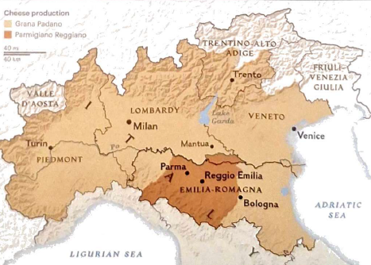
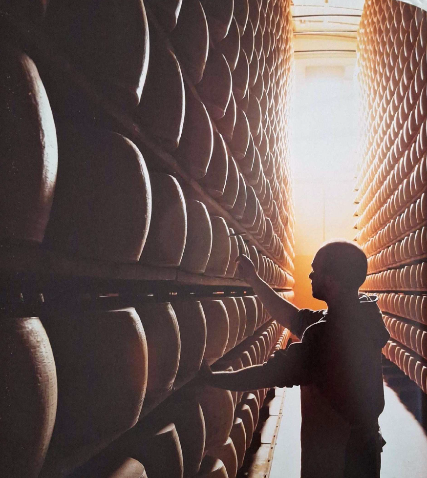
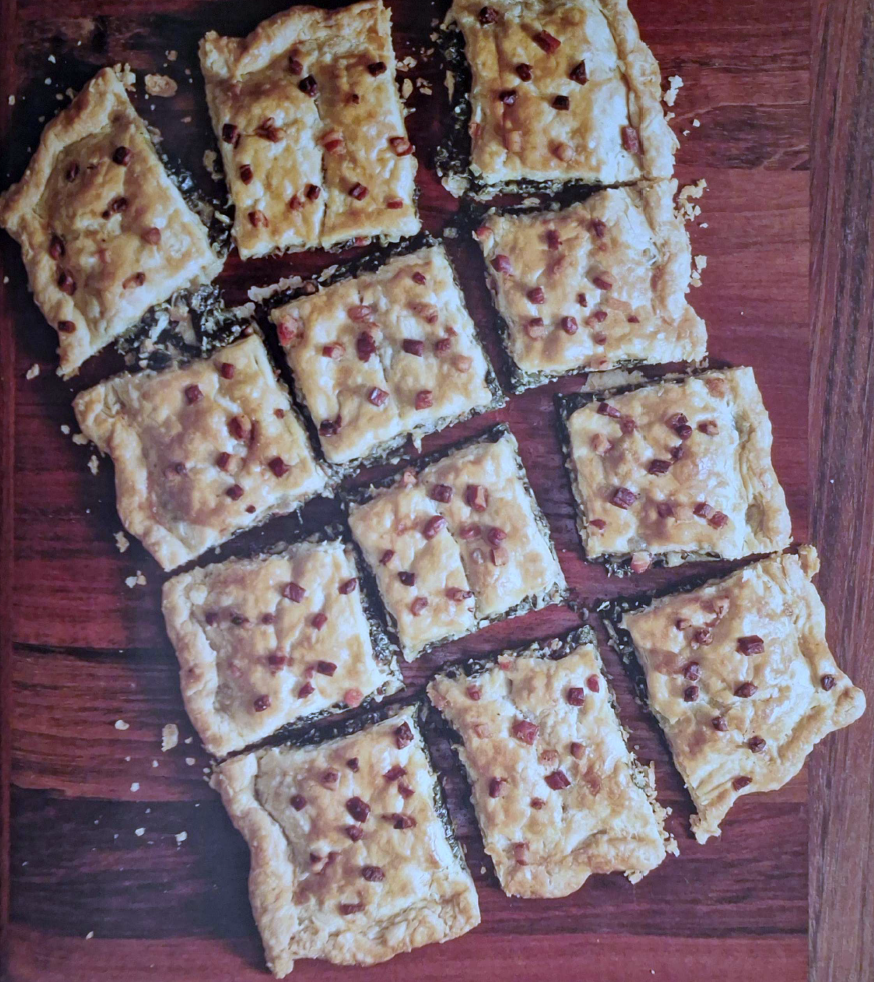

AEP Profissional II · Gastronomia Italiana
Prazeres Suínos e Delícias Epicuristas
Do Vale do Pó aos Apeninos

A Via Emília une há 2.000 anos as cidades que definem a gastronomia italiana: Modena, Parma, Ferrara, Bolonha.
O soro que sobra da produção do Parmigiano alimenta os porcos de Parma — os mesmos que dão origem aos melhores salumi do mundo.
Bolonha tem três epítetos: La Grassa (a Gorda — pela cozinha), La Rossa (a Vermelha — pelos pórticos de terracota) e La Dotta (a Sábia — pela sua universidade, a mais antiga da Europa).

Cada cidade, uma especialidade inconfundível
Capital culinária. A mortadella é um enchido cozido de carne de porco finamente triturada, com cubos de toucinho branco e pistácios — a inspiração original do bologna americano. O ragù é um molho de carne com manteiga e noz-moscada — nunca, jamais, servido com esparguete.
Terra de Ferrari e Pavarotti. O zampone é a pata dianteira do porco desossada e recheada com uma mistura de carne temperada — cozida lentamente e servida na véspera de Ano Novo. O aceto balsamico amadurece 12 a 25 anos em barris de madeira — um sacramento local.
Capital alimentar de Itália. O culatello — a parte mais nobre da perna traseira do porco, curada nas adegas húmidas das margens do Pó — é considerado o rei dos salumi italianos. Berço do erbazzone, batizado scarpazzoun pelos talos da acelga que lembram um sapato (scarpa). Divide os locais: ricota no recheio, ou não?
Onde o mar encontra os Apeninos. A piadina é pão achatado de farinha e banha, cozido em pedra — símbolo romagnolo. Os garganelli são massa de ovo enrolada sobre um pente, formando um tubo canelado; servidos com ragù ou prosciutto. O brodetto é o ensopado de peixe dos pescadores da costa adriática. À medida que os Apeninos sobem, surgem os funghi porcini, as trufas e a caça.

Chamado scarpazzoun no dialeto local, nasceu como comida camponesa de piquenique nos jardins de Reggio Emilia. Acelgas temperadas com pancetta e Parmigiano, envoltas numa massa de manteiga.
Evoluiu de cucina povera para o lanche mais amado da região — cortado em quadrados, servido quente ou à temperatura ambiente.
"Erbazzone" significa herb pie — o recheio é sempre verde.
Rende 12 porções · Forno a 200 °C
Sinopse em 4 etapas
A massa tradicional chama-se fuiada. Misturar farinha, sal e gordura (manteiga ou banha); juntar água gelada gradualmente até obter uma massa macia, elástica e não pegajosa. Envolver em película e refrigerar mínimo 1 hora.
Dourar a pancetta em azeite em lume médio-baixo (5–7 min) até libertar a gordura. Reservar a pancetta. Manter a gordura na frigideira — é nela que se cozinha a base de cebola e alho.
Refogar cebola e alho na gordura reservada. Juntar a acelga em punhados, tapar até murchar. Retirar a tampa e cozinhar até toda a humidade evaporar — crucial para a massa não ensopar. Arrefecer completamente; temperar com noz-moscada, sal e pimenta. Incorporar Parmigiano e pancetta.
Estender a massa o mais fino possível. Forrar o tabuleiro, distribuir o recheio em camada uniforme, cobrir com a segunda folha e crimpar as bordas. Picar a superfície com um garfo para deixar sair o vapor. Pincelar com azeite (tradição) ou ovo. Assar a 200 °C, 30–35 min, até dourado e estaladiço.
Por que a culinária da região casa naturalmente com os seus vinhos
O mais aromático e delicado dos Lambruscos. Cor rubi pálida, aromas de violeta e morango silvestre, acidez pronunciada e baixo teor alcoólico (10,5–11,5%). As borbulhas e a acidez cortam a gordura da pancetta e da manteiga — parceiro histórico desta cozinha.
Rubi com reflexos granada, aromas de cereja ácida, violeta e ervas, com toque de tabaco fresco. Seco, harmonioso, levemente tânico e com final ligeiramente amargo. Os locais chamam-lhe "Sanzves" — o vinho do quotidiano da Romagna. Equilibra a amargura da acelga e o umami do Parmigiano.
Colinas a sul de Reggio Emilia — o mesmo terroir do erbazzone. A Spergola, casta branca autóctone, produz espumantes frescos e de acidez viva que cortam a gordura da massa; tintos de Marzemino e Malbo Gentile acompanham o recheio. Elogiado já no século XV como "fresco e espumante".
Porquê estes vinhos? A gordura e salinidade do erbazzone — manteiga, pancetta, Parmigiano — pedem vinhos com acidez firme para limpar o palato. O Lambrusco seco é o parceiro inato; o Sangiovese acrescenta estrutura tânica que equilibra o recheio; o Colli di Scandiano e di Canossa fecha o círculo — vinho e prato nasceram na mesma terra.
Avaliação de acordo com a análise estrutural da harmonização